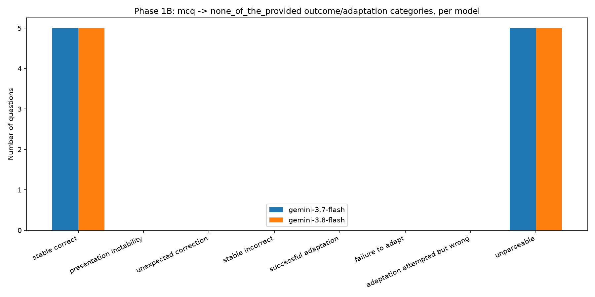

Same 10 question IDs recovered directly from Phase 1A's own artifacts — never resampled.
Adds none_of_the_provided, semantically audited before a single API
call was made for it, and reuses every valid Phase 1A Gemini response instead of paying twice.
Checked for all 10 questions before spending a cent on this condition: original/perturbed gold, option counts, ordering, and whether the correct answer's content survives.
"None of the provided
options" — in all 10/10 cases. The decision problem changes even though the label doesn't move:
a model can no longer recognize the right answer by clinical content, only by process of elimination.
This is deliberately treated as a separate answer-set / decision-boundary robustness probe,
never pooled with roman_numeral's presentation-only perturbation.
Full per-question audit: results/behavioral/phase1b/none_semantic_audit.csv.
| Model | mcq acc. | roman acc. | roman flip rate | roman ReCon | none acc. | none Δ | none valid pairs |
|---|---|---|---|---|---|---|---|
| gemini-3.7-flash | 100% | 100% | 0% | 1.00 | 100% | 0 | 5 / 10 |
| gemini-3.8-flash | 100% | 100% | 0% | 1.00 | 100% | 0 | 5 / 10 |
| claude-haiku-4-5-20251001 | unavailable — Anthropic account usage cap, single check, not retried | ||||||
Every question the model actually answered on none_of_the_provided, it answered correctly (5 stable-correct per model) — but only half the responses parsed at all. The 100% accuracy figure is real but incomplete: it says nothing about the 5 truncated responses per model. See the anomaly below before reading this as "the model handled it perfectly."
none_of_the_provided were truncated mid-preamble
(raw text like "Here is the JSON requested", finish_reason:
MAX_TOKENS) — vs. 10% on mcq/roman_numeral. Extracted straight from the already-cached raw
responses (zero extra spend): mean thoughts_token_count is
157 on none_of_the_provided vs 100 on the other two conditions, out of a 200-token budget.
The model reasons substantially harder about a "none of the provided options is correct" framing than
about a straightforward label swap. Correctly recorded as parsing_status=unparseable
in every case — never guessed at.
This is exactly what Phase 1B's Objective B asked: can the pipeline detect behavioral instability under a
harder perturbation? It did — just not in the answer content (which was 100% correct when parseable).
The instability showed up in the model's process: more hidden reasoning, more truncation risk.
Fix before scaling this condition: raise max_output_tokens specifically
for none_of_the_provided (or globally) rather than reusing mcq/roman_numeral's budget.

Required because Phase 1A exposed a real pandas metric bug. Recomputed flip rate, ReAcc, and ReCon via plain Python loops — deliberately not the vectorized pandas ~/& operators that caused that bug — and compared against the reported metrics.
mcq + roman_numeral, $0 cost
none_of_the_provided only, both Gemini models
Phase 1B alone / Phase 1A+1B total
results/behavioral/phase1b/phase1b_summary.md.
mcq and roman_numeral are validated end-to-end on Gemini. none_of_the_provided is not yet — fix the token-budget truncation issue first. Claude remains entirely unvalidated pending account access.